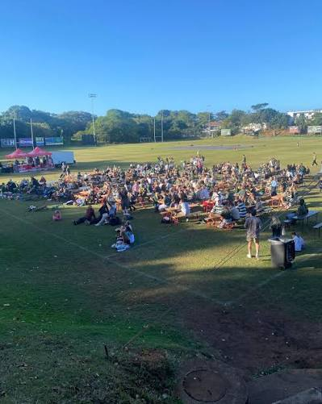
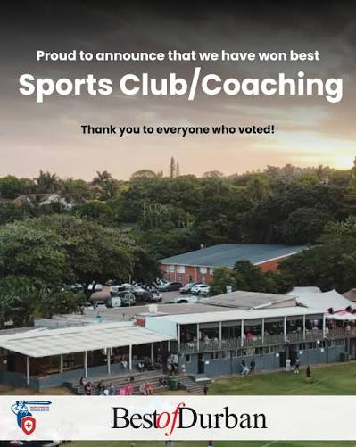
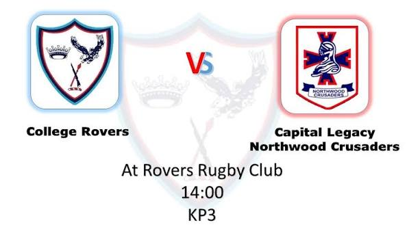

1964
Where it began
Crusaders was founded with a simple promise: build a club where people could compete with pride, support one another, and feel at home.

From our first teams to the full sports club we are today, Crusaders has grown through shared effort, community, and pride.
Crusaders was founded with a simple promise: build a club where people could compete with pride, support one another, and feel at home.
Players, families, coaches, and volunteers shaped a club culture grounded in respect, courage, and belonging.

Crusaders grew into a place where sport and community work side by side, earning recognition for the people and energy behind the club.

Rugby, cricket, squash, and hockey now share one Crusaders identity, bringing more players, supporters, and families into the club.
